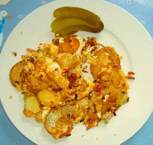

Bauernfrühstück
| Bauernfrühstück | |
|---|---|
 | |
| Zutatenmenge für: | 4 Personen |
| Zeitbedarf: | Kochzeit der Kartoffeln (am Vorabend): 40 Minuten + Zubereitung: 20–25 Minuten |
| Hinweise: | |
| Schwierigkeitsgrad: | |
Bauernfrühstück ist ein schmackhaftes Gericht, bei dem man prima Kartoffel- und auch Gemüsereste vom Vortag verwerten kann. Ähnlichkeit hat das Gericht mit Rührei, Bratkartoffeln oder auch der spanischen Tortilla.
Das Bauernfrühstück ist auch eine beliebte, bodenständige Spezialität der Küche Sachsen-Anhalts.
Zutaten
- 1000 g fest kochende Kartoffeln (z. B. Sieglinde, Bamberger Hörnla, Nicola oder Princess, siehe Zutat:Liste von Kartoffelsorten)
- 2 große Zwiebeln
- 150 g Speckwürfel
- 1 EL Butter
- 3 EL Butterschmalz
- 3 Eier
- frisch gemahlener Pfeffer
- Salz
Kochgeschirr
- 1 Topf
- 1 beschichtete Pfanne
- 1 Pfannenwender
- Schüsseln
Zubereitung
- Die Kartoffeln als Pellkartoffeln am Vortage gar kochen.
- Die Kartoffeln schälen und in Scheiben schneiden.
- Die Eier mit Salz und Pfeffer würzen und in einer Schüssel verrühren.
- Den Speck in der Butter auslassen und wieder herausheben.
- Die Zwiebeln pellen und fein hobeln oder würfeln (Ansichtssache).
- Die Zwiebeln im ausgelassenen Fett, Butter und Butterschmalz glasig anschwitzen.
- Die Zwiebeln herausheben.
- Die Kartoffeln langsam im verbleibendem Fett anbraten, bis sie Farbe bekommen.
- Nun erst Speck und Zwiebeln unterheben.
- Die Eimasse hinzugeben.
- Die Eier stocken lassen und bitte nicht zu lange weiter garen (die Eier werden zu Gummi).
- Das Bauernfrühstück abschmecken.
-
Die Kartoffeln
-
anbraten,
-
die Eier würzen und verrühren,
-
die Zwiebeln zugeben.
-
Den Speck zugeben und
-
die Eier zugeben.
-
Das fertige Gericht.
Beilagen
Varianten
- Kleingehackten Schnittlauch und/oder Petersilie hinzufügen
- Als Farb-Akzent: Kleingehackte Paprika oder Baby-Paprika hinzufügen
- Eine kleine Dose Mais hinzufügen
- Für Vegetarier: Auch ohne den Speck ein herrliches Gericht!